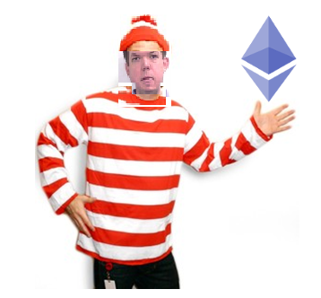
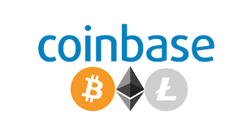
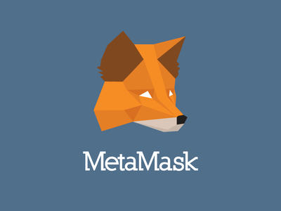
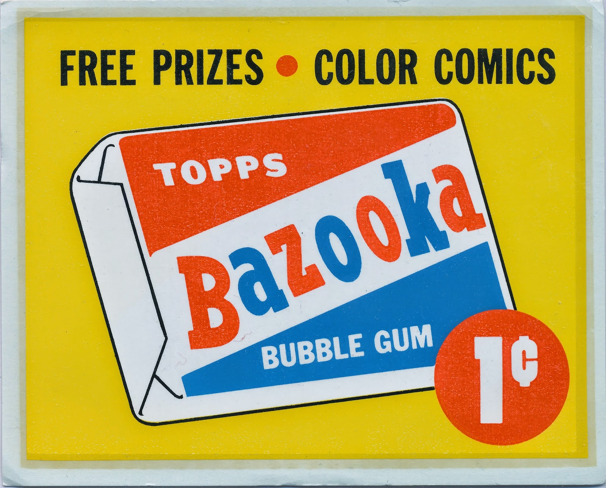
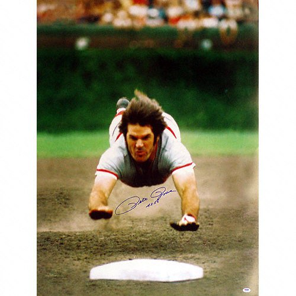
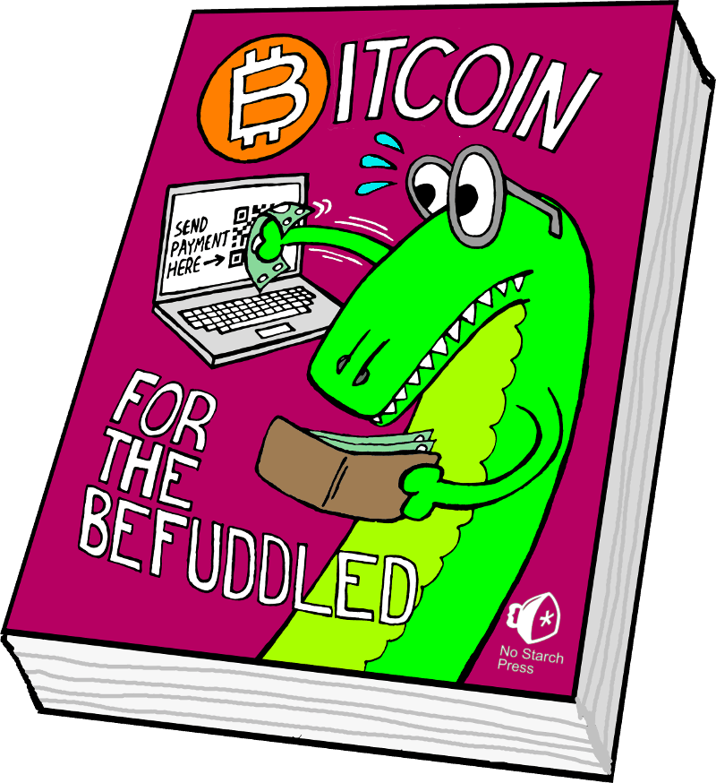

~🍌~
How To Buy Pennycandy In The 21st Century
A Practical Introduction To The Blockchain Using Ethereum
~🍌~
By @tompurl
WARNING!
The systems and markets that I'm showing you
today are bleeding edge and incredibly
unstable . Everything could collapse
tomorrow in
bizarre ways that are impossible to predict.
I am not a financial advisor and
none of my advice should be used for investment
purposes. You should assume that speculating in
cryptocurrencies is like gambling in a casino .
Source: https://gph.is/2aHHg4A
Financial Disclosure
I own a small amount of the following cryptocurrencies:
Bitcoin
Bitcoin Cash
Ethereum
I am an employee of PNC Bank but my views
are my own and in no way are related to my
employer.
Source: https://gph.is/1YJ0TcL
Who Is Tom?

Systems Engineer and all-around computer nerd
Risk-averse cryptocurrency hobbyist(?)
I feel that the term "cryptocurrency hobbyist" will sound
just as cool in 2019 as "webmaster" did in 2001.
What I Believe About The Blockchain Ecosystem
It is the future of assigning,
storing and transferring value
It's a huge and will have
a profound impact on the digital world.
These are very grandiose statements, I know but
I believe they're true
It's the biggest thing to happen to money
since the invention of currency
This is why I'm trying to learn a little
about the blockchain this year
How Should I Get Started?
To start your learning process you need to start making transactions .
We'll be working in the Ethereum ecosystem
because of it's popularity and low transaction
costs.
I'm an experiential learner.
I'm consistently amazed by people who
claim to be blockchain experts who've
never made a single transaction.
But This Sh*t Is Bananas!
Source: http://i.imgur.com/wOJ5N.gif
Disciplines:
Economics
Psychology
Cryptography
Computer Science
Business
Finance
History
My big mistake with learning about the
blockchain was that I thought I had to
understand everything 100% before I invested
my first nickel.
But "real" money is also very complicated
Most people have no idea how any of these things work:
Credit card transactions
Mutual funds
ACH transactions
Wire transfers
How the fed controls the supply of currency.
You certainly wouldn't try to teach a
child about all of these things before you let
them buy their first candy bar.
Source: http://bit.ly/2mBtbL7
But you need to learn how money works at a
young age. And chances are you need or want to
learn how this whole blockchain thing works.
It dawned on me that the way that we teach
kids about using money is a good model
for teaching adults (or kids) how to use
cryptocurrencies.
Which childhood financial lessons should we use
when starting with the blockchain?
Principle #1
Find a sherpa who will help you along the way.
When I was a kid this was an older siblling or parent.
See if you have a crypto-savvy friend. If not, make one at a user group!
Principle #2
Find a trustworthy source of "money"

When I was a kid I trusted that the coins I
got were real and that I could buy things with
them.
With cryptocurrencies you have two choices:
A reputable exchange like Coinbase.
A friend who will give or sell you
some cryptocurrency.
Principle #3
Find a trustworthy wallet app

Coinbase is a good web wallet. The
disadvantage is that you don't control your
private keys.
Metamask is my favorite desktop wallet
because it's easy to use and open-source.
Trustwallet is a good mobile option that's
also open source and very easy to use.
Principle #4
Start with small sums of money in your wallet.
To quote Sinbad, you didn't give a kid a
dollar when he was little because they would
OD on penny candy.
I started with $40 at first because that
was the amount I would have paid for a good
book
Find a currency with relatively low
transactions costs and buy a small amount
using a reputable exchange.
Treat this like small-scale gambling.
But more fun!
It's still cheaper than most books and classes.
Principle #5
Make small, simple transactions.

When I was a kid I started by buying
bazooka joe and candy bars.
Good examples for cryptocurrency transactions:
Send a few bucks to your buddy and have him/her send it back.
I kid you not, this is like MAGIC
Donate a buck to the internet archive!
Buy a Cryptokitty!
Ways to lose cryptocurrency:
Somehow losing your wallet
Transaction fees
The key here is to create a "risk sandbox"
where mistakes can be made without dire
consequences.
Somehow losing your wallet
Oh no, I wasn't supposed to share that online?
Oh no, I was supposed to back that up?
Share your story of how you thought you lost $270 of bitcoin.
Transaction fees
This happens to all of us.
You're having fun and then notice that you no longer have enough money to move $0.05 when you want to move $5.00.
Principle #7
Profit! Rinse and repeat!
Next Steps


If you have a non-trivial amount of money in a
wallet, then buy a highly-rated cold wallet.
Read books!
Bitcoin for the Befuddled
??
Don't read scammy BS!
Principles Summary
Find a sherpa who will help you along the way.
Find a trustworthy source of "money".
Find a trustworthy wallet app
Start with small sums of money in your wallet.
Make small, simple transactions.
Expect to lose a little money.
Rinse and repeat!
{kind=link}